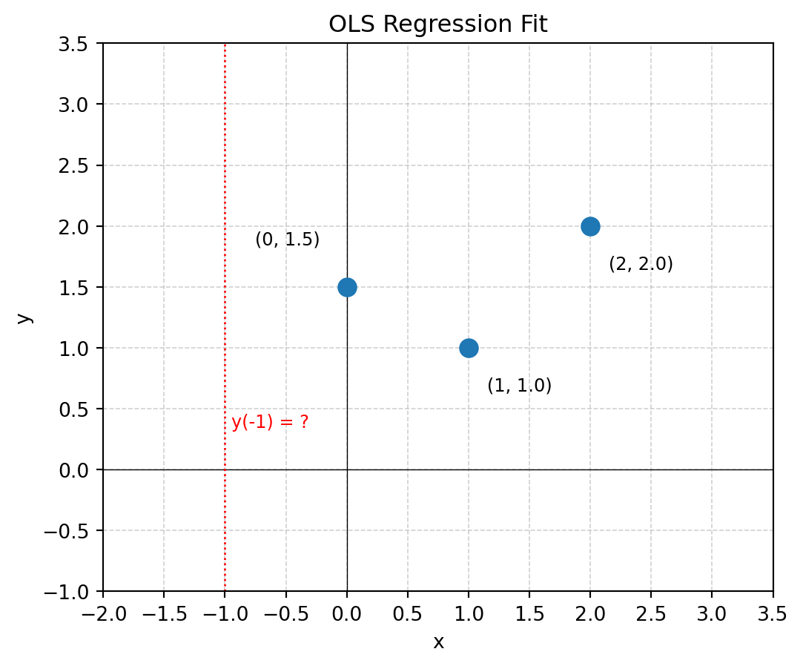
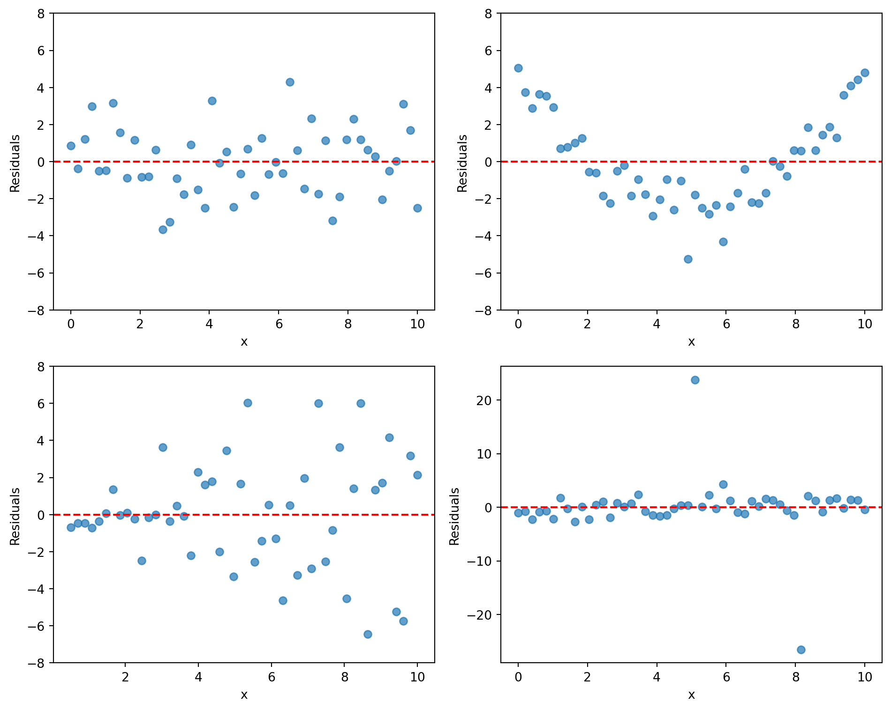
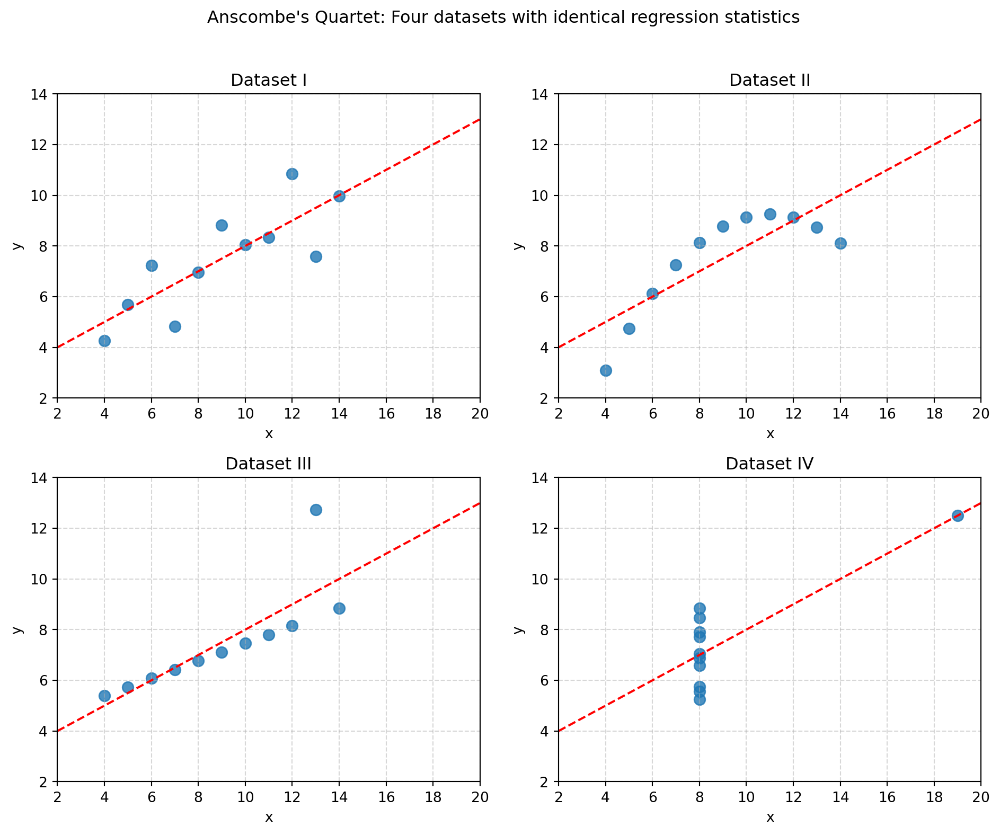
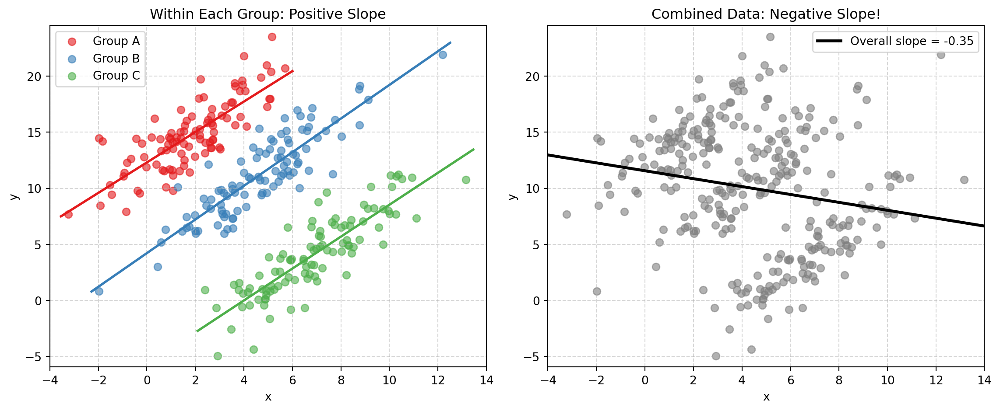
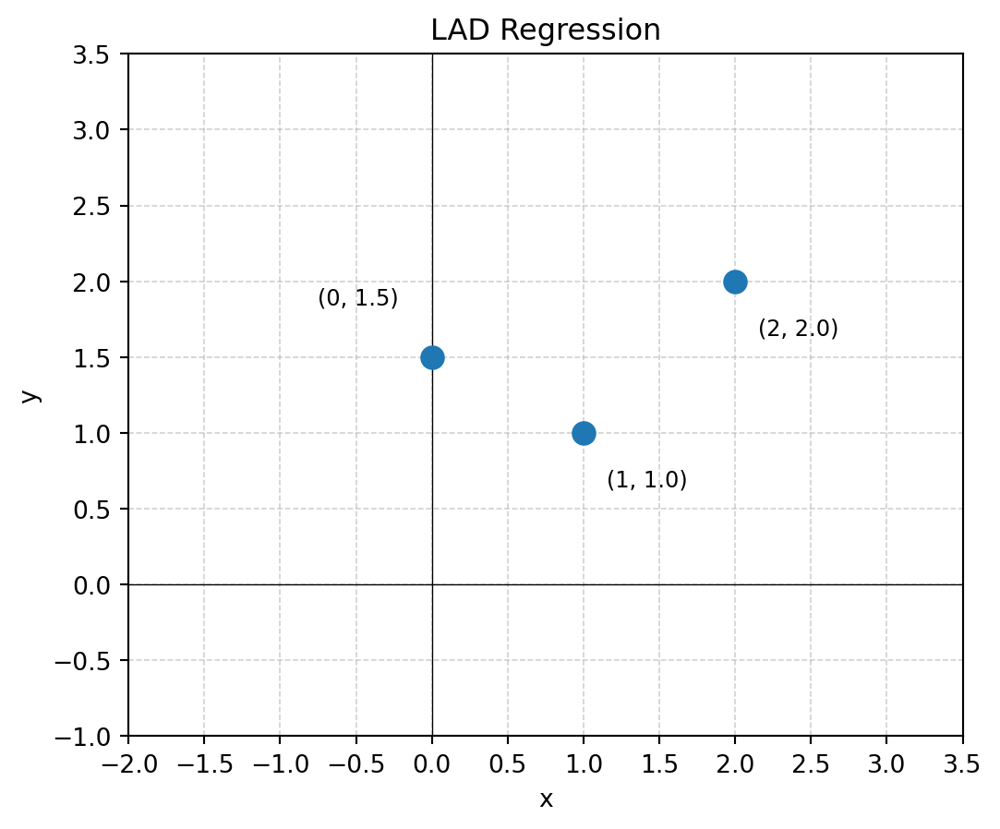

Day 4: Linear Regression
Mathcamp 2026 — Estimation Theory
Introduction
In the previous class, we saw the central connections discovered by Gauss between estimators, norms, and normal distributions:
\boxed{\text{Normal errors}} \Leftrightarrow \boxed{\text{MLE minimizes } \sum \epsilon_i^2} \Leftrightarrow \boxed{\text{MLE} = \text{Mean}}
Today, we will extend these ideas from estimating a single quantity to linear regression—finding a line that best fits a set of data points. We will see how the same principles of least squares and maximum likelihood estimation apply, and how the geometry of the problem provides insights into the properties of our estimators.
Recall that the problem of regression is to find a function f that predicts a response variable y from a set of predictor variables x:
y_i = f(x_i) + \epsilon_i
Our goal is to choose a norm \|\cdot\| and find a function f that minimizes the norm of the residuals \| \vec{\epsilon} \|.
Gauss discovered that if we assume the errors \epsilon_i are normally distributed, then finding the most likely function f is equivalent to minimizing the sum of squared residuals—the square of the L^2 norm. We also saw that the more complicated a model, the more sensitive it is to noise in the data, leading to overfitting.
Statisticians typically start with a simple model and gradually increase complexity. The choice of norm determines the assumed error distribution: the L^2 norm assumes normal errors, the L^1 norm assumes Laplace errors, and so on.
Linear Regression
The simplest regression model is linear, where we assume that the response variable y is a linear function of the predictor variable x:
y_i = m x_i + c + \epsilon_i \tag{1}
where m is the slope, c is the intercept, and \epsilon_i is the error term. The residual vector is:
\vec{\epsilon} = \begin{bmatrix} y_1 - (m x_1 + c) \\ y_2 - (m x_2 + c) \\ \vdots \\ y_n - (m x_n + c) \end{bmatrix}
Assuming normally distributed errors, the MLE is the least squares estimator—the values of m and c that minimize:
e = \| \vec{\epsilon} \|_2^2 = \sum_{i=1}^{n} (y_i - (m x_i + c))^2 \tag{2}
Deriving the Estimators
The following exercises walk you through the derivation. We use the notation for averages:
\bar{x} = \frac{1}{n} \sum_{i=1}^{n} x_i, \quad \bar{y} = \frac{1}{n} \sum_{i=1}^{n} y_i.
NoteExercise 1: Computing c
Find the value of c that minimizes Equation 2 either by taking the derivative or by noticing that Equation 2 is a quadratic function of c. Your final answer should be in terms of \bar{x}, \bar{y}, and m.
NoteExercise 2: Shifting the data
Define
\begin{aligned} Y_i &= y_i - \bar{y}, \\ X_i &= x_i - \bar{x}. \end{aligned}
(a) What is the average of Y_i and X_i?
(b) Using the value of c you found in Exercise 1, show that Equation 1 can be rewritten as
Y_i = m X_i + \epsilon_i \tag{3}
In other words, we can shift the data so that the regression line passes through the origin. Now we only have one parameter to estimate.
Note that this also means that the regression line always passes through the point (\bar{x}, \bar{y}).
NoteExercise 3: Estimating m
(a) Rewrite Equation 2 in terms of X_i and Y_i using Equation 3.
(b) Find the value of m that minimizes Equation 2.
(c) Express your answer in terms of the original data x_i, y_i and their averages \bar{x}, \bar{y}.
Your final answer can be written as:
m = \frac{\text{Cov}(x,y)}{\text{Var}(x)} \tag{4}
where the covariance measures how x and y vary together: \text{Cov}(x,y) = \frac{1}{n} \sum_{i=1}^{n} (x_i - \bar{x})(y_i - \bar{y}) and the variance measures how spread out x is: \text{Var}(x) = \frac{1}{n} \sum_{i=1}^{n} (x_i - \bar{x})^2.
NoteExercise 4: Simplifying the formula
(a) Show that
\sum_{i=1}^{n} (x_i - \bar{x})(y_i - \bar{y}) = \sum_{i=1}^{n} x_i y_i - n \bar{x} \bar{y}
(b) Show that
\sum_{i=1}^{n} (x_i - \bar{x})^2 = \sum_{i=1}^{n} x_i^2 - n \bar{x}^2
This provides a faster way to compute the slope m.
NoteExample
Consider the example from Day 1 with data points:
(0, 1.5), (1, 1), (2, 2)
Use the formulas from Exercises 1–3 to find m and c, and predict y(-1).
Summary
We have derived the least squares estimators for linear regression:
\boxed{ \begin{aligned} m &= \frac{\text{Cov}(x,y)}{\text{Var}(x)} = \frac{\sum_{i=1}^{n} (x_i - \bar{x})(y_i - \bar{y})}{\sum_{i=1}^{n} (x_i - \bar{x})^2} \\[1em] c &= \bar{y} - m\bar{x} \end{aligned} }
Key insights:
- The regression line always passes through the point (\bar{x}, \bar{y}).
- The slope m depends on how x and y co-vary relative to how spread out x is.
- These closed-form solutions exist because we assumed normal errors (least squares).
Sensitivity of the Estimators
In the first class we talked about sensitivity of predictions to noise in the data. We can also quantify the sensitivity of the estimated parameters m and c. Recall that \kappa_{y_i \to m} = \frac{\partial m}{\partial y_i} measures how sensitive the estimate m is to changes in observation y_i, and similarly for c.
NoteExercise 5: Sensitivity of m and c
(a) Compute \kappa_{y_i \to c} using your formula for c from Exercise 1 and show that for any fixed i, \kappa_{y_i \to c} \to 0 as n \to \infty assuming variance of x is bounded.
(b) Compute \kappa_{y_i \to m} using your formula for m from Exercise 3 and show that \kappa_{y_i \to m} \propto \frac{1}{\text{Var}(x)}.
These results reveal two important insights:
More data stabilizes c: The sensitivity of the intercept decreases as we collect more data points. This makes intuitive sense—with more observations, no single point can dramatically shift where the line crosses the y-axis.
Spread in x stabilizes m: The sensitivity of the slope is inversely proportional to \text{Var}(x). If x is concentrated in a small interval, the estimate of m becomes very sensitive to noise. This point is particularly important for experimental design. If you want to estimate a slope precisely, spread out your x values!
What Can Go Wrong?
Linear regression relies on several assumptions: the relationship is linear, errors are normally distributed with constant variance, and there are no hidden variables. When these assumptions fail, our estimates can be misleading. This section explores three ways things can go wrong.
Residual Analysis
We cannot observe the true errors, but we can examine the residuals \hat{\epsilon}_i = y_i - \hat{y}_i. If our model is correct, the residuals should look like random noise—no patterns, no trends, no systematic structure.

- Top left (Good): Random scatter around zero with constant spread—our assumptions appear valid.
- Top right (Nonlinearity): Curved pattern suggests the true relationship is not linear.
- Bottom left (Heteroscedasticity): Spread increases with x, violating constant variance.
- Bottom right (Outliers): A few extreme points may indicate data errors or heavy-tailed distributions.
Anscombe’s Quartet
In 1973, statistician Francis Anscombe constructed four datasets with identical summary statistics—same means, variances, correlation, and regression line y = 3 + 0.5x—yet completely different structures.

- Dataset I: Linear relationship—regression is appropriate.
- Dataset II: Curved relationship—linear regression misses the structure.
- Dataset III: One outlier pulls the regression line away from the true pattern.
- Dataset IV: A single influential point determines everything—extreme low \text{Var}(x).
WarningThe Lesson
Always visualize your data. Summary statistics can completely hide the true structure.
Simpson’s Paradox
A trend that appears in several groups can reverse when the groups are combined. This is called Simpson’s Paradox, and it’s a warning about hidden variables.

Each group shows a positive relationship between x and y. But when we ignore group membership and fit a single line, the slope becomes negative! The between-group pattern overwhelms the within-group pattern.
NoteExercise 6: What Can Go Wrong?
(a) For each of the four Anscombe datasets, describe what the residual plot would look like and what assumption is violated.
(b) In the Simpson’s Paradox example, suppose x is years of experience, y is salary, and the groups are different industries. Why might each industry show a positive slope while the combined data shows a negative slope?
(c) If you wanted to estimate the effect of experience on salary, should you fit one regression line or three? Why?
Beyond Least Squares
L^1 Regression
We can formulate linear regression assuming Laplace errors instead of Gaussian errors. The MLE becomes the Least Absolute Deviations (LAD) estimator, minimizing:
e = \sum_{i=1}^{n} |y_i - (m x_i + c)| \tag{5}
Unlike least squares, there is no closed-form solution for LAD. It requires numerical optimization (linear programming). While LAD is more robust to outliers, it is computationally more expensive—one reason ordinary least squares remains widely used.
NoteExercise 7: LAD Regression
For the data points (0, 1.5), (1, 1), (2, 2), find the values of m and c that minimize Equation 5.
Hint: Consider which points the optimal line must pass through.

Why Closed-Form Solutions Matter
The fact that we can find closed-form expressions for least squares estimators is a special property of linear regression with normal errors. This is one reason linear regression remains one of the most widely used statistical methods.
In general, MLEs cannot be computed in closed form. Statisticians use numerical optimization techniques—gradient descent, Newton’s method, and others—to maximize the likelihood function.